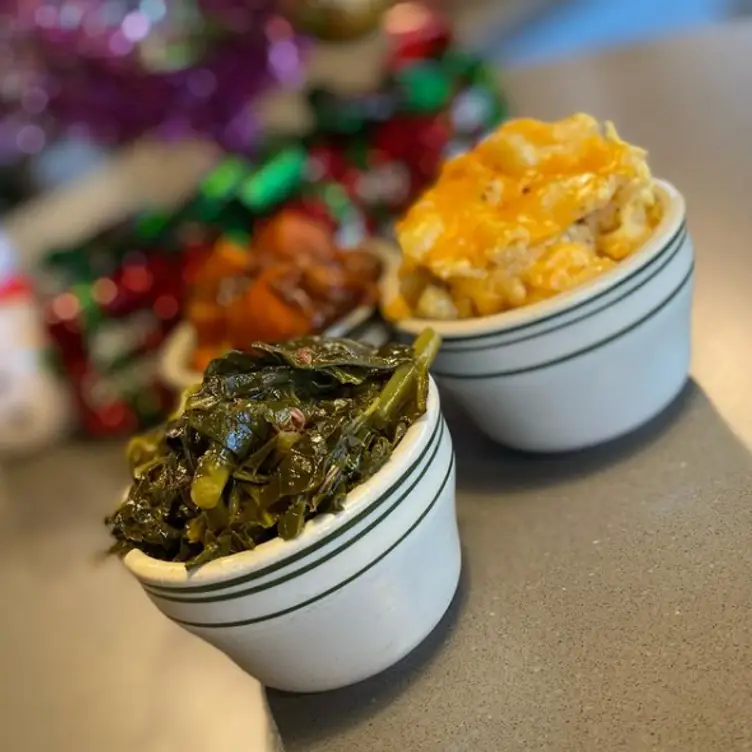

Appitizers
- Fried Green Tomatoes: Sliced green tomatoes, coated in a seasoned cornmeal
batter, fried to perfection, and served with a zesty remoulade sauce.
- Cajun Shrimp Cocktail: Succulent shrimp seasoned with a spicy Cajun
blend, served with our house-made cocktail sauce.
- Hush Puppies: Golden, crispy cornmeal fritters, served with a drizzle
of honey for that perfect sweet and savory combination.
- Collard Greens Dip: Creamy dip made with tender collard greens, cheese,
and a hint of smoky bacon, served with cornbread squares for dipping.
Entrees
- Southern Fried Chicken: Crispy, golden-brown fried chicken served with a
choice of two sides and a fluffy buttermilk biscuit.
- Shrimp and Grits: Creamy stone-ground grits topped with sautéed shrimp,
smoky Andouille sausage, and a rich, flavorful Creole sauce.Tea
- Soulful Sampler: Can't decide? Try a bit of everything with our sampler
platter featuring fried chicken, catfish, collard greens, macaroni and
cheese, and cornbread.
- Barbecue Platter: Slow-smoked ribs or pulled pork, slathered in our
house-made barbecue sauce and served with coleslaw and baked beans.
- Vegetarian Jambalaya: A hearty and spicy medley of rice, bell peppers,
onions, and okra, simmered in a Creole tomato sauce.
Sides
- Macaroni and Cheese: Creamy, cheesy, and baked to perfection,
it's the ultimate comfort food.
- Collard Greens: Slow-cooked with a secret blend of spices for
that classic Southern flavor.
- Candied Yams: Sweet potatoes baked with brown sugar, cinnamon,
and a touch of marshmallow fluff.
- Fried Okra: Crispy, seasoned okra pods, perfect for dipping.
- Cornbread: Sweet and savory cornbread squares, served with honey
butter.
Desserts
- Peach Cobbler: Fresh peaches baked with a buttery crust and a hint
of cinnamon, topped with a scoop of vanilla ice cream.
- Sweet Potato Pie: A Southern classic, rich and creamy sweet potato
filling in a flaky pie crust.
- Banana Pudding: Layers of creamy vanilla pudding, ripe bananas,
and vanilla wafers, topped with whipped cream.
- Pecan Pie: A slice of Southern heaven with a gooey pecan filling
and a buttery crust.
Beverages
- Sweet Tea: The South's favorite thirst quencher, brewed to perfection
and served over ice.
- Lemonade: Freshly squeezed and sweetened just right.
- Southern Mint Julep: A refreshing blend of bourbon, fresh mint,
sugar, and crushed ice.
- Peach Iced Tea: Sweet tea infused with the flavor of
ripe Georgia peaches.